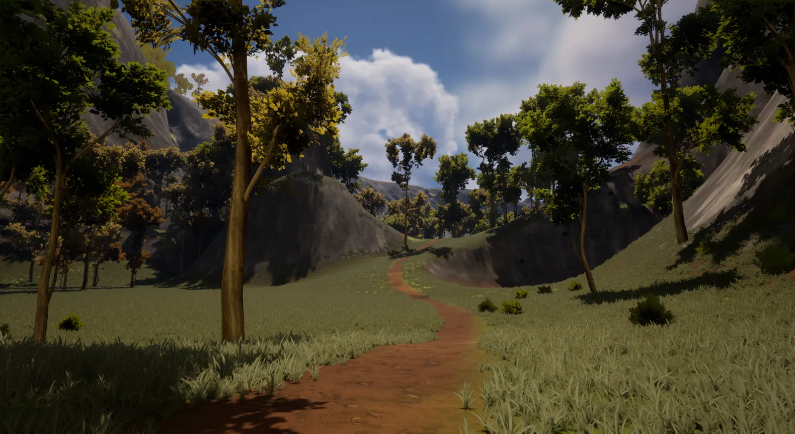
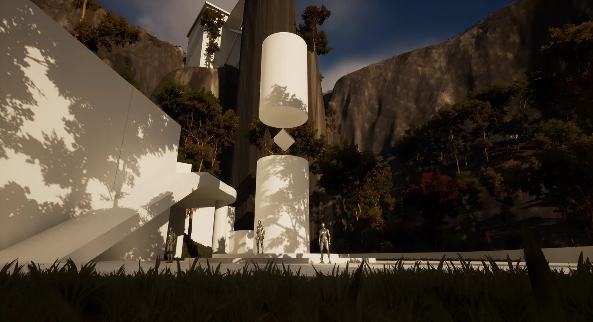
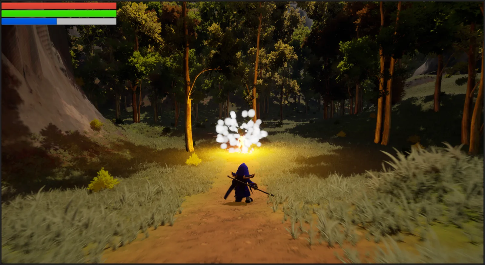
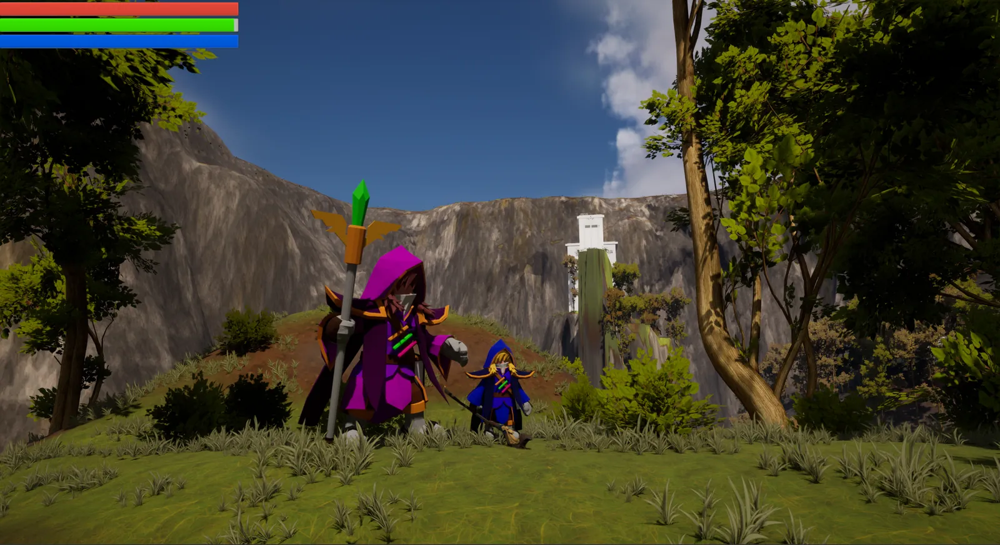
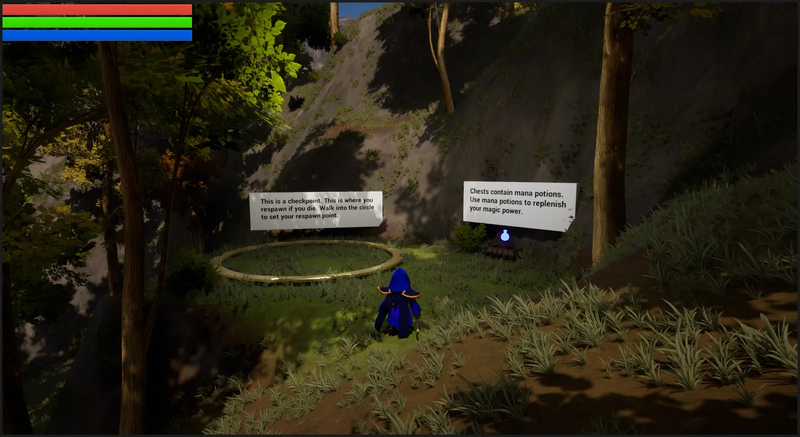
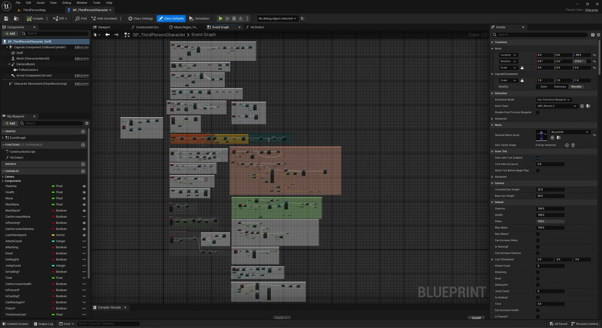
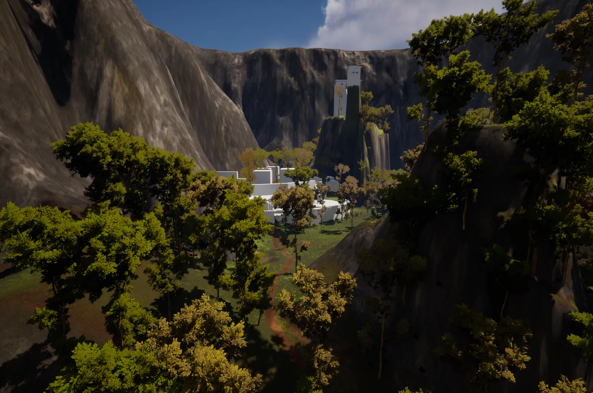
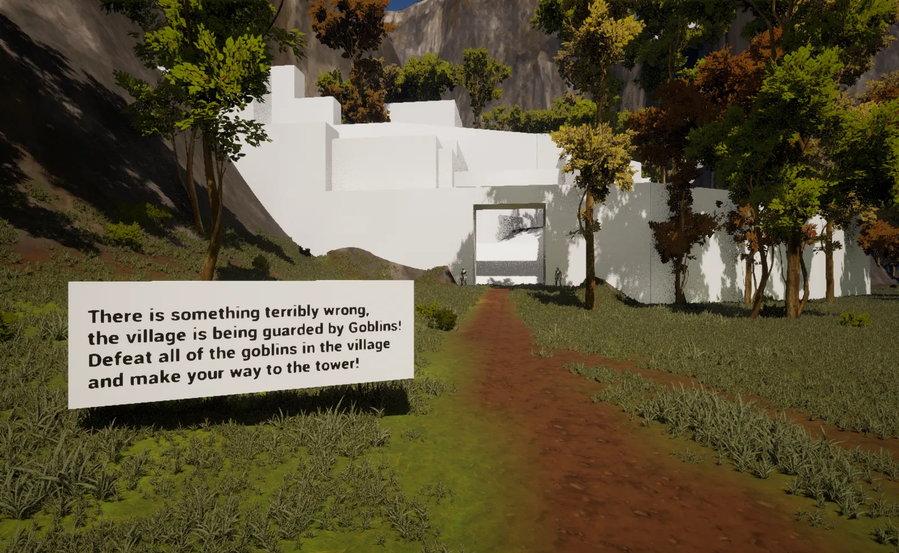
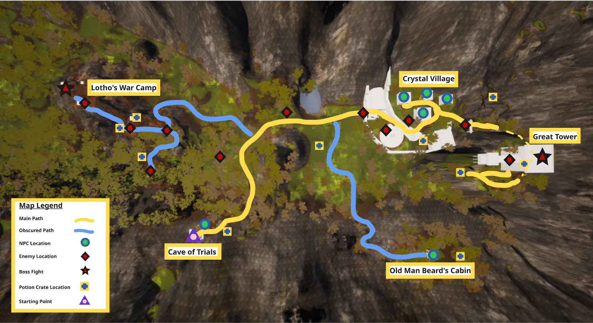

The Great Wander
At a Glance
The Great Wander is a third-person action adventure set in a magical world brimming with mystery, monsters, and wildness. The player enters the world as a young wizard beginning their training, only for it to be cut short by an invasion from a long-forgotten wizard foe.
Created as my midterm project for the Circuit Stream Online Game Design Bootcamp 2024/25.
Main focus: Blueprinting mechanics, level design, environment design, and world building.
Main takeaways: paths are a powerful tool for giving players direction and information; I get a lot of satisfaction from solving problems in Blueprints; and scope creep is real! My long list of Blueprints and large map made finishing on time very difficult.

Blueprinting Mechanics

- Simple melee combat system
- Simple spells (Fireball, Heal)
- Health, stamina, and mana systems
- Usable items (Wizard Staff, Mana Potion)
- UI (menu, settings, HUD)
- Enemy AI with nav mesh pathfinding
- Flying mechanic
- Checkpoints and respawn
Items and Effects
The main character's small size is a major influence on the mechanics. Since the spells and items the player finds are meant for older, bigger wizards, most items are oversized and spells often have unexpected side effects.



Level Design
The first main level is the Frazzled Forest, set in a deep valley that has kept the wizards safe and isolated from the outside world. It's designed to naturally introduce the main mechanics through a series of challenges and prompts while laying the foundation for the story. Due to time constraints, I used Text Blueprints to convey the story and explain mechanics, which helped guide development and fill gaps during playtesting.


